Scene 1Warm-Up
▶ Start hereHow your Wonder Films lessons work1-minute videoOpen ▾
🎯 TodayI can…
- measure the mass and volume of different objects.
- record my measurements in a data table and use them to compare objects.
- explain how measurement helps scientists describe matter more exactly than just looking.

🔎 Mystery specimenWhat is this old machine for?
What to do: Press Inspect specimen. Move the magnifying lens over the machine, then tap 3 things you notice.

📚 Word WallWords scientists use
What to do: Tap or click each card to flip it and read what the word means.
Scene 2The Lesson
🌱 Part 1Why Measure?
Your eyes can trick you. A golf ball and a ping-pong ball are about the same size, but one has much more mass. Just looking can't tell you how much more.
A measurement is a number with a unit. A scientist doesn't say, "This rock is heavy." She says, "This rock has a mass of 200 grams." Anyone can check a number.
🎞️ Put the scenes in orderHow do scientists study a turtle nest?
What to do: Drag each photo into the film strip, from first to last. You can also tap a photo, then tap a frame. Get the order right and your strip becomes a movie.
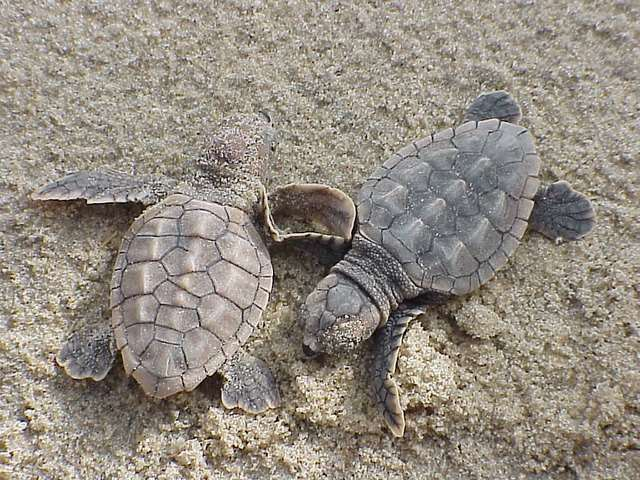
Two hatchlings feel the same in your hand. A friend says, "They must have the same mass." What do you think?
🌤 Part 2A Tool for Each Property
Each property has its own tool. A balance or scale measures mass in grams (g). A ruler measures length in centimeters (cm). A measuring cup measures the volume of a liquid in milliliters (mL).
A thermometer measures temperature: how hot or cold something is, in degrees Celsius (°C) or degrees Fahrenheit (°F). Water freezes at 0 °C (32 °F) and boils at 100 °C (212 °F).
🧪 The Same-Size TestSame size, same mass?
What to do: Follow the steps one at a time. You will pick, test, and then explain.
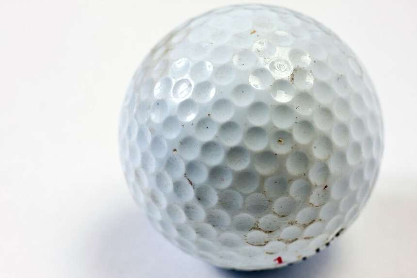
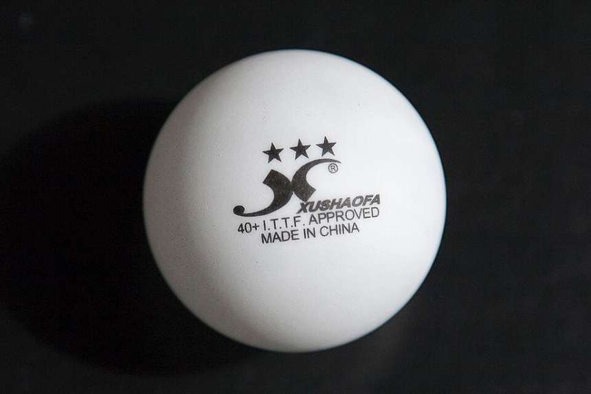
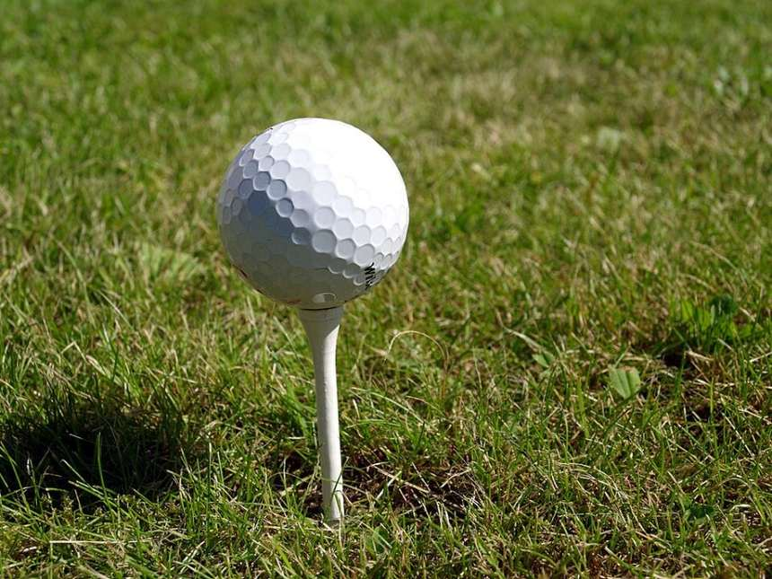
🌍 Part 3Recording and Comparing
Scientists write every measurement in a data table, so nothing gets lost. Then they can draw a bar graph. The taller the bar, the bigger the number.
Sea turtle scientists put thermometers in nests and record the temperatures. Their data show that warmer nests hatch more girls, and cooler nests hatch more boys.
🌡️ The Temperature ClimbClimb from the coldest water to the hottest
What to do: First, make a prediction. Then brush the glowing step: drag across it (or tap it again and again) until the photo shows.
Which is warmer: a sea turtle nest or a cool Florida spring?
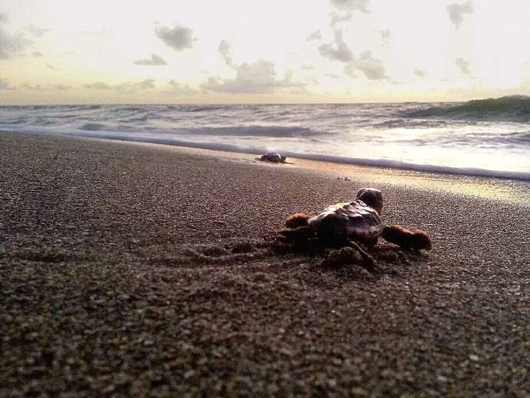
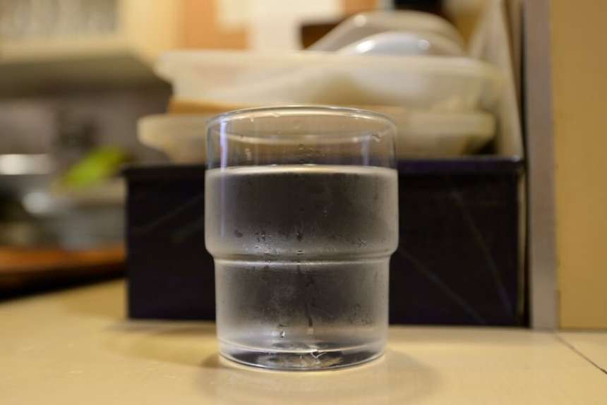
Step 1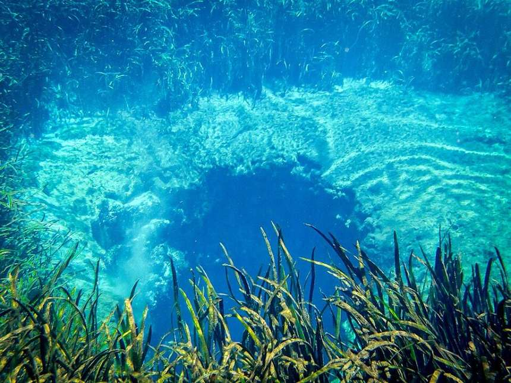
Step 2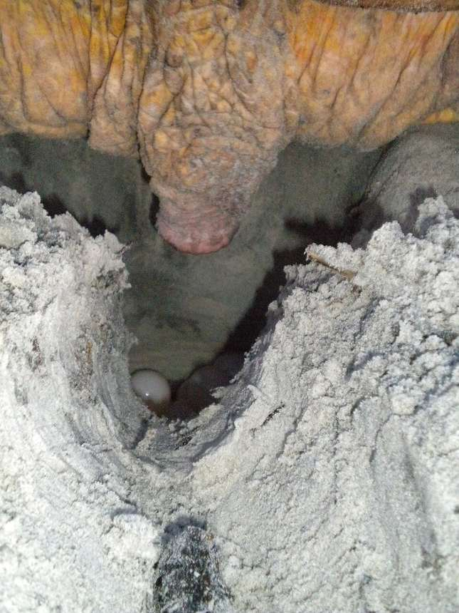
Step 3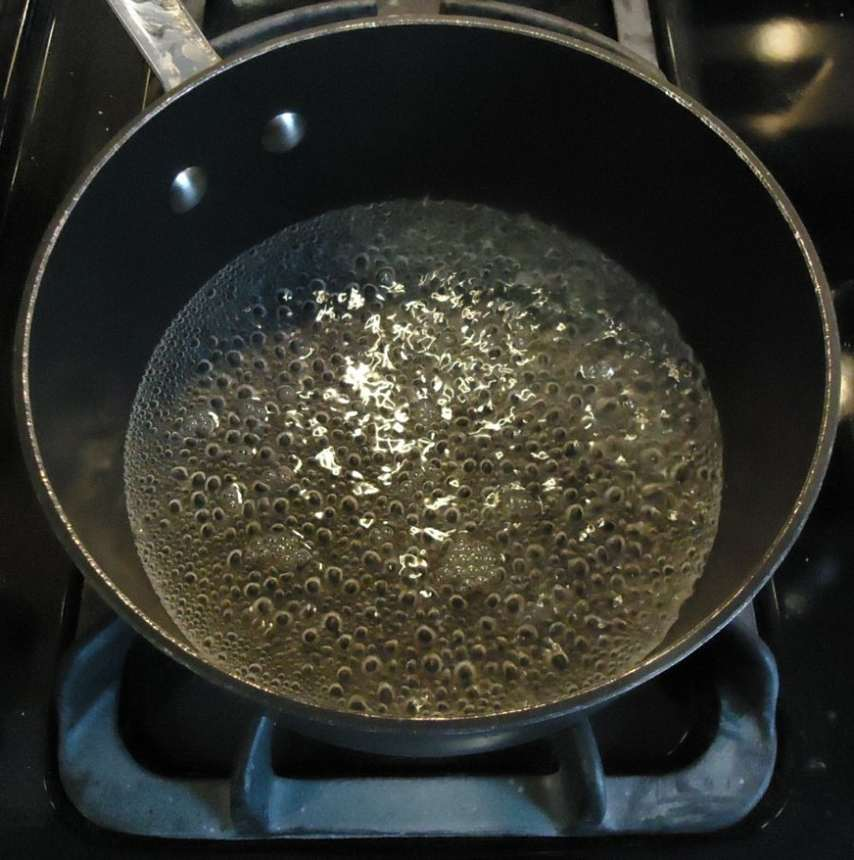
Step 4Temperature is a property you can measure. A thermometer gives an exact number, so you can compare: 0 °C is freezing, and 100 °C is boiling.
Max dips his hand in a pool and says, "It feels like about 25 degrees." Is that a good way to measure temperature?
The kilogram in a jar

From 1889 to 2019, one small metal cylinder near Paris, France, was the official kilogram. Countries kept exact copies under glass jars. The United States' copy was called K20.
Since 2019, the kilogram is set by a rule from science instead. Machines called Kibble balances can measure it very exactly.
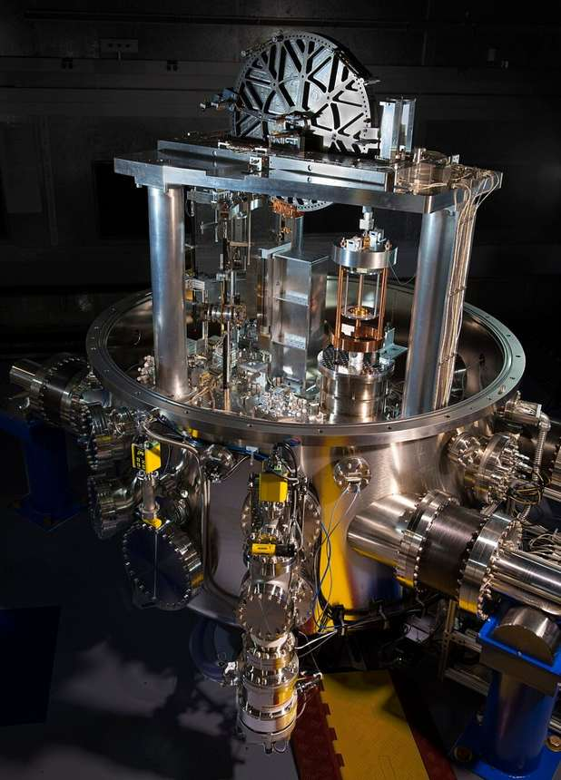
🕵️ Part 4Measurement Files
What to do: Pick 3 files, one at a time. Tap a clue, then name the property being measured. Predict the tool, and watch it at work.
| File | My observation | Property | Tool | My evidence |
|---|
🌍 Rebuild the sceneUse your evidence to rebuild the scene OPTIONALOpen ▾
What to do: Pick one you solved. Pick the place it points to, then pick the living things that belong there.
Pick one from your chart and explain it.
Start with: "File __ shows…"
Scene 3Self-Check
Why do scientists measure objects instead of just looking at them?
What tool would you use to find the volume of a cup of water?
A student makes a bar graph comparing the mass of four objects. Object C has the tallest bar. What does that mean?
Scene 4Assignment
🔍 Part ARead the data
What to do: Read each one. Build the graph, then pick the best answer.
1. Scientists weighed four loggerhead hatchlings from one nest. Build a bar graph of their masses. Make each bar match its number in the table.
Hatchling masses
| Mass | |
|---|---|
| A | 18 g |
| B | 21 g |
| C | 19 g |
| D | 23 g |
Tap inside a bar's column at the right height, or use ＋ and －, until each bar matches the table. Then press Check my graph.
2. Which hatchling has the most mass?
3. The scientists also measured shells. Hatchling C has the longest shell (4.6 cm). Does it also have the most mass?
🚀 Part BShort answer
What to do: Answer in complete sentences. Use your science words.
1. What is the difference between estimating mass and measuring mass? Which is more exact?
2. If two objects are the same length, can they still have different masses? Explain.
✍️ Write and explainWhy is measuring with tools better than just looking and guessing when scientists compare matter?
What to do: Pick one from your evidence chart. Answer the three questions. Use at least one of the science words under the boxes.
Start with: "I think measuring with tools is important because…"
Start with: "In the Same-Size Test, I noticed that…"
Start with: "This makes sense because scientists need exact data to…"
🎨 Part CDraw and label
What to do: Draw a bar graph of the four hatchling masses from Part A. Label the bottom with A, B, C, and D, and the side with grams. Give your graph a title.
🎬 Your question from Scene 1Can you answer it now?
What do you still wonder about? Write your question here. Then answer it.
📋 My answersEverything you wrote, in one place
(Your answers show up here as you write.)
How to turn in: Copy your answers and paste them into the Canvas assignment. Or download the file and upload it. Then press Save my drawing in Part C and upload your drawing too.
✅ Checklist
What to do: Tap each item when it is done. Items you finish on the page check themselves.
- My evidence chart has 3 measurement files and my explanation.
- Part A: my bar graph and both answers.
- Part B: questions 1 and 2.
- Part C: my drawing and both labels.
- Write and explain, with at least one science word.
🎬 Premiere my measurement storyYour exhibit
What to do: Check your exhibit. Pick the one you wrote about, add your first name, then press Premiere film.
I observed…
The tool I trust is…
My evidence…
It tells us…
🎞️ This film's frames
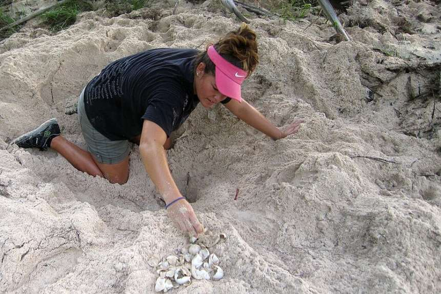
The turtle nursery
The Same-Size Test
The Temperature Climb
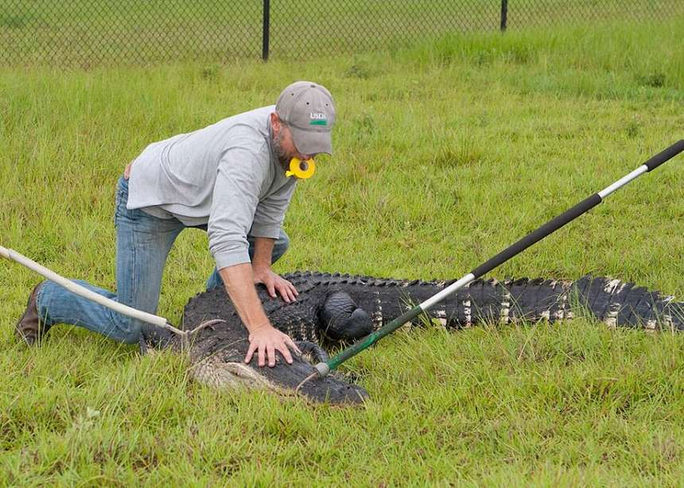
Measurement files
Earn all four frames in the Lesson, then finish the checklist.
🔜 Coming up nextComing up next: 27.01
How Does Matter Change When Heated or Cooled? Next time, watch what happens to matter when its temperature goes up or down.
Photo and music credits
- Golf ball with white tee in grass, Santeri Viinamäki, CC BY-SA 4.0
- Green Sea Turtle (6215133132), U.S. Fish and Wildlife Service, Public domain
- First steps of hatchling of loggerhead sea turtle (Caretta caretta) running t…, Jean-Lou Justine, CC BY-SA 4.0
- Alligator at Moody AFB, GA (9662887713), U.S. Department of Agriculture, Public domain
- American Alligator in Everglades (41081534711), Trish Hartmann, CC BY 2.0
- NOAA diver temperature logger Pagan 2022, NOAA Fisheries / Raymond Boland, Public domain
- Bleached brain corals staghorn corals Sombrero Key Reef summer 2023, Ananda Ellis / NOAA, Public domain
- 2013-07-19 17 06 11 National Weather Service Standard Rain Gauge measuring tu…, Famartin, CC BY-SA 4.0
- Thunderstorm over the Little Manatee River, RealGatba, CC0
- Endangered Florida manatee (Trichechus manatus), Crystal River National Wildl…, U.S. Fish and Wildlife Service, Public domain
- Manatee Springs State Park Florida springs04, Ebyabe, CC BY 2.5
- Florida freeze 140129-F-RS318-004, Staff Sgt. John Bainter, U.S. Air Force, Public domain
- Ichetucknee Springs (48929004991), Florida Guidebook, CC BY 2.0
- First steps of hatchling of loggerhead sea turtle (Caretta caretta) running t…, Jean-Lou Justine, CC BY-SA 4.0
- Boilingkettle, Plorpy2, CC BY-SA 4.0
- Green Sea Turtle (6215133128), U.S. Fish and Wildlife Service, Public domain
- First steps of hatchling of loggerhead sea turtle (Caretta caretta) running t…, Jean-Lou Justine, CC BY-SA 4.0
- Female Loggerhead Sea Turtle (7f0745e4-1dd8-b71c-0781-f11139094e0b), National Park Service, Public domain
- Moonlight Florida United States Travel Photography (233161441), Giuseppe Milo, CC BY 3.0
- Satellite Beach, Florida - 24382153262, Michael Seeley, CC BY 2.0
- NIST-4 Kibble balance, Jennifer Lauren Lee, NIST, Public domain
- Ice water (11462178684), AdriannaNicole, CC BY-SA 4.0
- Ichetucknee Springs (48929003331), Florida Guidebook, CC BY 2.0
- Loggerhead Laying Eggs (7609569006), U.S. Fish and Wildlife Service, Public domain
- Water boiling in a pot on a stove, Tomwsulcer, CC0
- My Public Lands Roadtrip- Sunny Alabama Shores for National Trails Day! (1857…, Bureau of Land Management, Public domain
- 34 Celsius recorded on Thermometer, Doggo19292, CC0
- First steps of hatchling of loggerhead sea turtle (Caretta caretta) running t…, Jean-Lou Justine, CC BY-SA 4.0
- Save the sea turtles! Andersen teams with local university to conserve specie…, University of Guam (courtesy photo), Public domain
- Loggerhead sea turtle hatchlings (8002919527), U.S. Fish and Wildlife Service, Public domain
- Loggerhead Sunrise (18423413069), NOAA's National Ocean Service, CC BY 2.0
- DFC 5875 Antique two-pan balance scale with metal bowls and a worn brass base…, PattayaPatrol, CC BY-SA 4.0
- Golf ball 4, Horia Varlan, CC BY 2.0
- Table Tennis Plastic Ball 40+ mm, Peter Porai-Koshits, CC BY-SA 4.0
- Kilograms-pml0013 K20 and Friends Four of the five U.S. national prototype ki…, National Institute of Standards and Technology (NIST), Public domain
- Music: "La mer" I. "De l'aube à midi sur la mer" (Claude Debussy), played by the Concert Band of the United States Air Force Band, public domain (via Wikimedia Commons).
- Opti the owl: Optima Academy. Sound effects are made by the page. The nest movie, the Same-Size Test, and the Temperature Climb are models; every place photo is real.